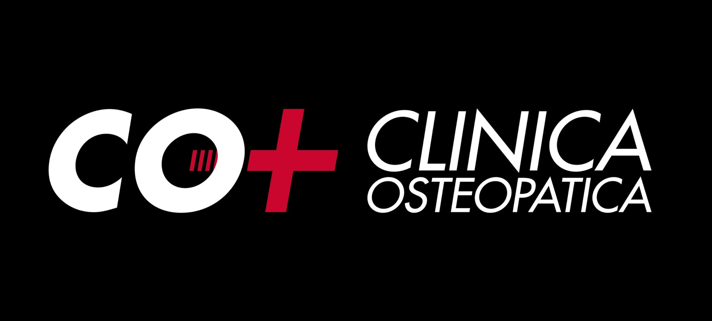
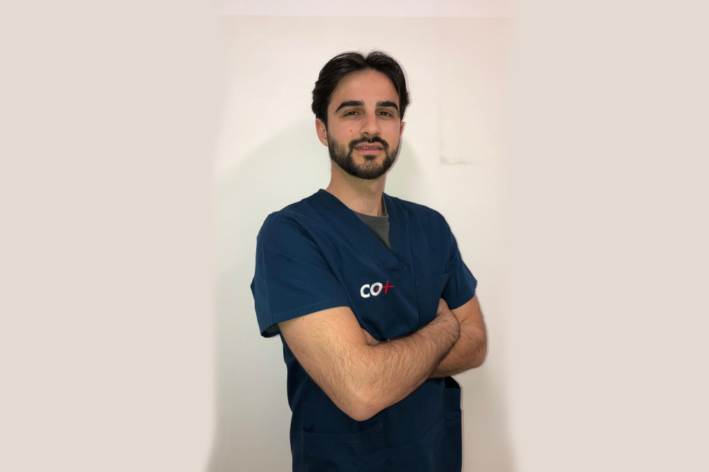

Prenota la tua prima visita in pochi secondi.
Due minuti per capire cosa succede dalla prima visita al piano di recupero.
Se il dolore continua a ripresentarsi, probabilmente stai trattando il sintomo e non la causa.
Prenota la tua valutazioneIn CO+ crediamo che ogni paziente meriti un percorso costruito sulle proprie esigenze. Per questo non proponiamo trattamenti standardizzati.
Attraverso una valutazione approfondita analizziamo il tuo caso e costruiamo un percorso terapeutico personalizzato, con il coinvolgimento dei professionisti più indicati.
Il nostro obiettivo è ridurre il dolore, migliorare la funzionalità e aiutarti a ritrovare benessere e qualità della vita.
"Beh che dire, Roberto e Katia sono top, starei sempre nei loro studi. Son riusciti a sistemarmi dopo anni e ultimamente, dopo un intervento, davvero non ho parole. Ve li consiglio vivamente."
Luglio 2025 · Recensione Google verificata"Many thanks to Mirko, Roberto and Giulia for excellent treatment @ Clinicaosteopatica / Sauze d'Oulx. Grazie mille!"
Marzo 2025 · Recensione Google verificata"Sin dal primo appuntamento con la dottoressa Giulia Pinto mi sono trovato a mio agio. È molto professionale, spiega nei minimi dettagli tutto il trattamento. La clinica è molto pulita, le persone che ci lavorano sono molto professionali e ti avvolgono come se fossi a casa."
Marzo 2025 · Recensione Google verificata"Professionali, competenti, gentili ed accoglienti... Non posso che ringraziare Stefano e tutti i suoi collaboratori per avermi 'aggiustato' e assistito anche psicologicamente. Più che consigliato!!"
Marzo 2025 · Recensione Google verificataScegli la sede più comoda e inviaci la richiesta.
Analizziamo postura, movimento, sintomi e causa del problema.
Definiamo il percorso più adatto alle tue esigenze, coinvolgendo i professionisti necessari.
Ti accompagniamo durante tutto il percorso, monitorando i risultati e adattando il trattamento quando necessario.
Tecniche manuali mirate per alleviare dolori muscoloscheletrici e migliorare la mobilità.
Riabilitazione delle funzioni motorie ed esercizi terapeutici mirati.
Ottimizzazione del movimento e correzione degli squilibri muscolari.
Massaggi terapeutici per alleviare tensioni e favorire il recupero.
A seconda delle tue esigenze potrai essere seguito da un'équipe multidisciplinare. Ogni professionista lavora in sinergia con gli altri, condividendo informazioni e obiettivi per offrirti un'assistenza completa e coordinata. Non trattiamo solo il dolore: ci prendiamo cura della persona.

Luca SpinazzolaFisioterapistaCirca 60 minuti.
Se li possiedi, saranno utili per completare la valutazione.
Sì. Ogni paziente riceve un percorso costruito sulle proprie esigenze e, quando necessario, viene seguito da un team multidisciplinare.
Sì. Il nostro obiettivo è accompagnarti durante tutto il percorso di recupero, monitorando i progressi e adattando il programma in base ai risultati.
Non aspettare che il dolore limiti le tue giornate. Affidati a un team di professionisti che lavora insieme per aiutarti a ritrovare movimento, funzionalità e qualità della vita.
CO+ Clinica Osteopatica — Più sedi. Un unico metodo. La stessa qualità.
Prenota ora